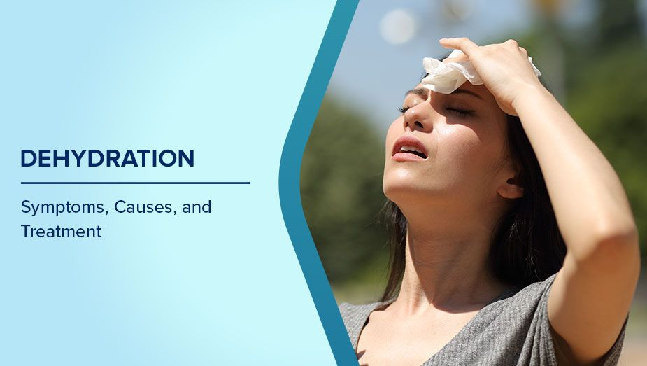
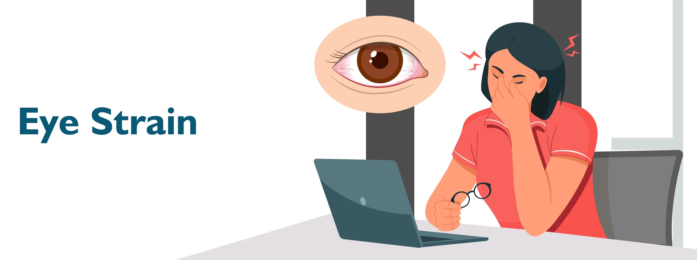
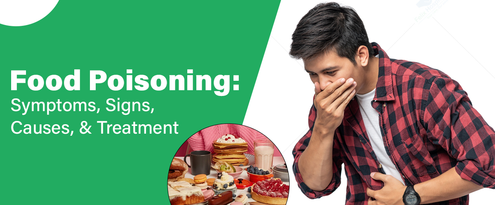

Depression
- About: Mental health disorder causing persistent sadness and loss of interest.
- Symptoms: Low mood, fatigue, suicidal thoughts.
- Do's: Seek therapy, stay active, talk to loved ones.
- Don'ts: Don’t isolate or self-medicate.
- Precautions: Mental wellness, avoid stress overload.
- Concern: If sadness persists for more than 2 weeks.

Dandruff
- About: Flaking of scalp due to dryness or fungus.
- Symptoms: Itchy scalp, white flakes.
- Do's: Use medicated shampoos, keep scalp clean.
- Don'ts: Avoid oily and dirty hair conditions.
- Precautions: Regular hair washing, avoid stress.
- Concern: If dandruff is persistent or worsens.

Dehydration
- About: Condition where the body loses more fluid than it takes in.
- Symptoms: Dry mouth, dizziness, dark urine, fatigue.
- Do's: Drink water frequently, especially in hot weather or while sick.
- Don'ts: Avoid excessive caffeine or alcohol during heat.
- Precautions: Carry a water bottle, eat hydrating foods (like fruits).
- Concern: Severe thirst, confusion, or fainting spells.

Eye Strain (Digital Eye Fatigue)
- About: Eye discomfort caused by long screen time or reading without breaks.
- Symptoms: Dry eyes, headache, blurry vision, neck pain.
- Do's: Follow the 20-20-20 rule, adjust screen brightness, use anti-glare glasses.
- Don'ts: Don’t stare at screens continuously without breaks.
- Precautions: Limit screen time, blink frequently, use proper lighting.
- Concern: Persistent eye pain or vision issues.

Food Poisoning
- About: Illness caused by eating contaminated food.
- Symptoms: Vomiting, diarrhea, stomach cramps.
- Do's: Drink fluids, rest, eat bland food.
- Don'ts: Avoid dairy, caffeine, spicy food.
- Precautions: Ensure food hygiene and proper cooking.
- Concern: Severe dehydration or bloody stools.